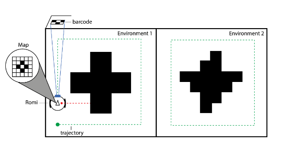
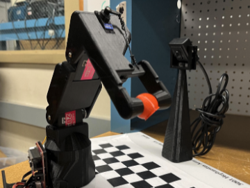
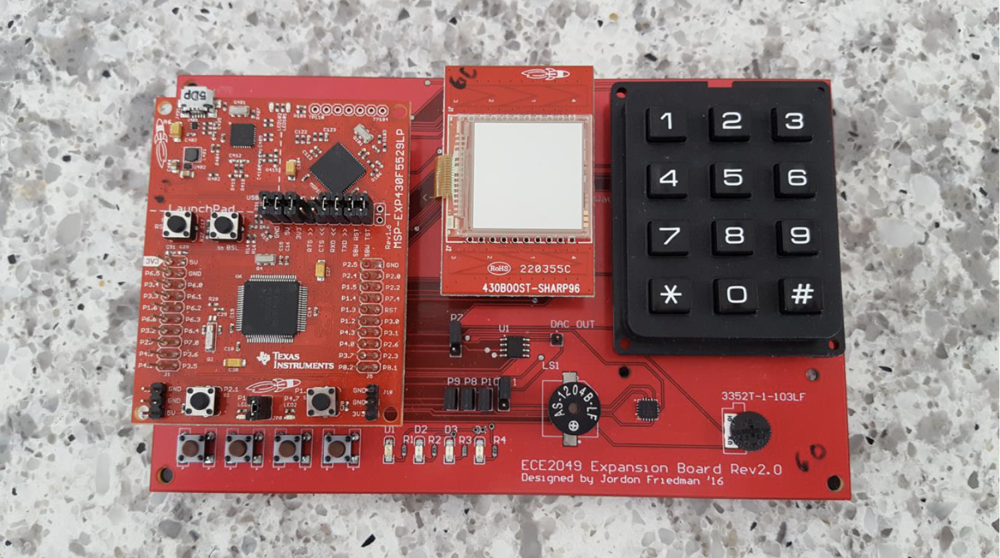

Actuation is defined as the effective conversion of electrical power into mechanical power, and
power transmission for
purposes of locomotion, and of payload manipulation and delivery. In this project, we developed
a four bar mechanism
for a differential drive robot. Read the full story.

Sensing plays a pivotal role in shaping the interactions between a robot and its environment
by incorporating sensors, feedback mechanisms, and decision processes. In the context of our
project,
we undertook the development of a sophisticated sensor architecture tailored for a differential
drive
robot. This architecture seamlessly integrates a diverse array of sensors, complemented by
advanced
filtering techniques, including the use of median filtering. Read the full story.

In this project, we used a serial manipulator that consists of three degrees of freedom (DoF)
controlled by three servo motors that rotate to control three rotational joins to sort colored
objects.
In this project, our main goal was to create a ROS architecture enabling a Turtlebot to
autonomously map, localize, and navigate
through an unknown maze using a LiDAR. The specific tasks included self-localization within the
maze, obstacle
avoidance during maze
traversal, identification of exploration frontiers for navigation, mapping the entire maze, and
the ability to navigate
back to any point on the map.

I implemented several programs in C using various pheripherals using the MSP430 Architecture. The
programs
include space invaders game, guitar hero, temperature and date display, simple function
generator. In these projects,
I developed time-sensitive programs levaraging timers and interrupts.
Developed a desktop application for Mass General Brigham Hospital employees to
access and use with a team of 9 other developers. The application focuses on creating and
carrying out service requests, such as food, gift, and
medical
deliveries, as well as laundry and transportation services. Additionally, a database of
locations, medical
equipment,
medical equipment service requests, and employees is maintained and implemented in an
easy-to-use graphical
interface.

This project was an environmental project, where I and three other students
collaboratively discovered and created solutions incorporating nature to mitigate soil erosion
of precious
watersheds in Albania (abroad). Our project was a part of a grant formulated by a German
Governmental
Organization called GIZ that provides aid to other countries.